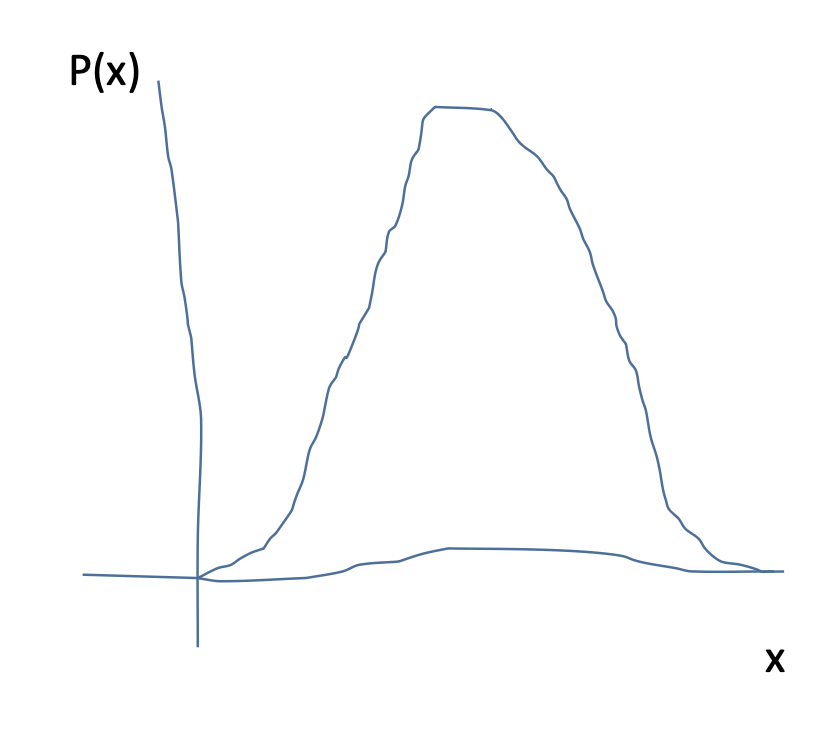
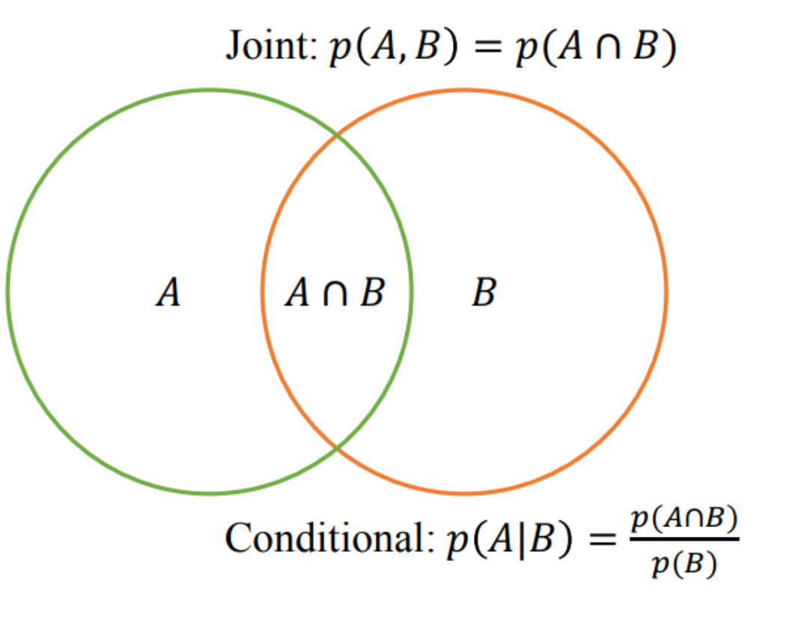
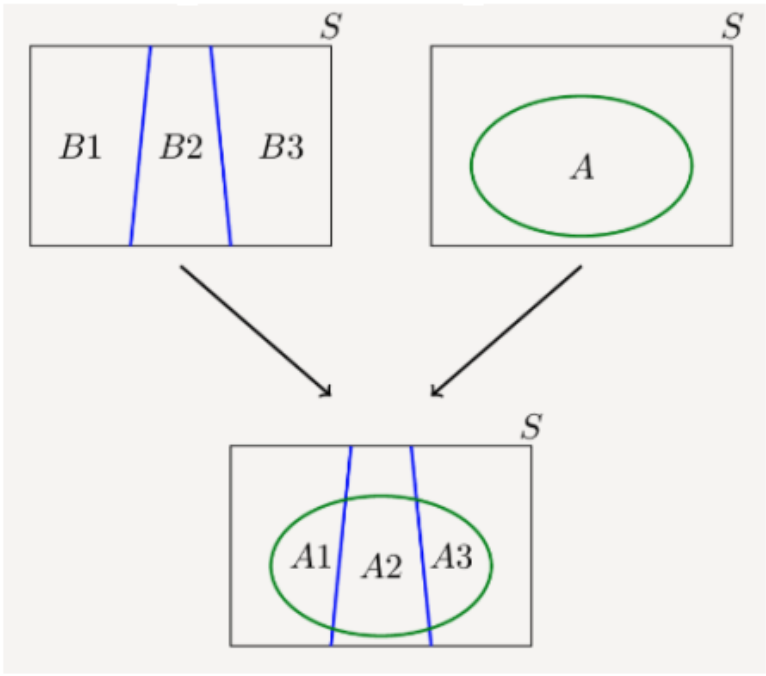
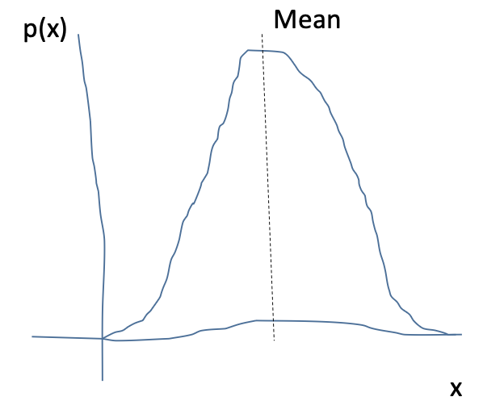
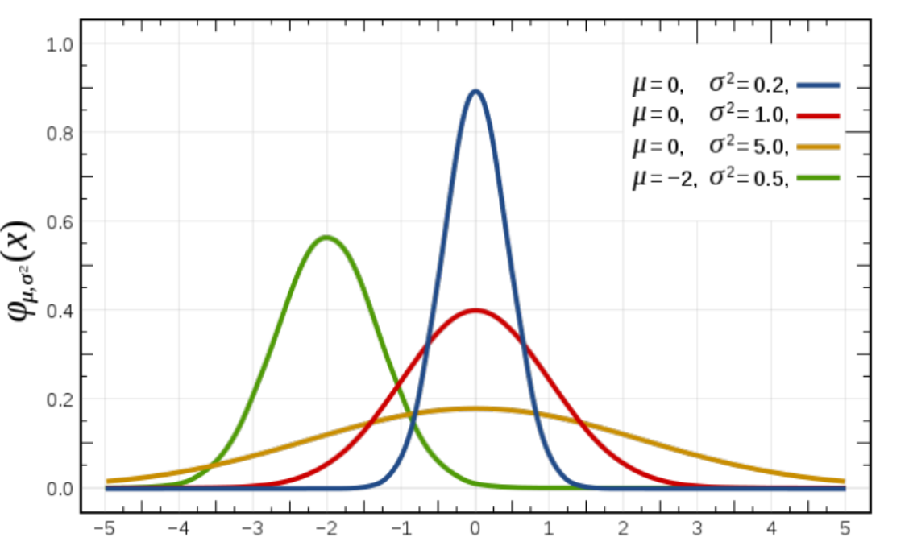
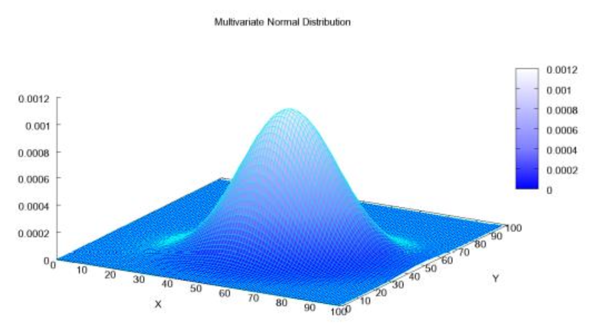
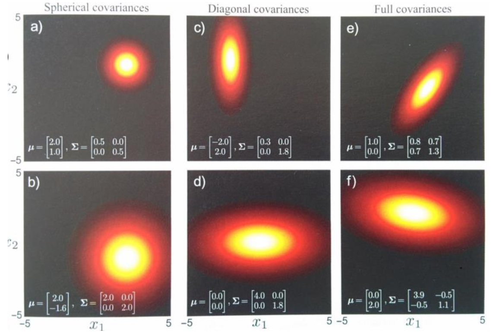

Radian Gondokaryono
October 5, 2022
Slides adapted from: CSC 2515 Introduction to Machine Learning. Credit: Amir Massoud Farahmand, et. Al CSC 2515 Fall 2021: Introduction to Machine Learning | IntroML-Fall2021 (amfarahmand.github.io) and CSC477 (toronto.edu) Week 7
Uncertainty arises through:
Probability provides a consistent framework for the quantification and manipulation of uncertainty.
Sample space Ω is the set of all possible outcomes of an experiment.
Observations ω ∈ Ω are points in the space also called sample outcomes, realizations, or elements.
Events E ⊂ Ω are subsets of the sample space.
In this experiment we flip a coin twice:
\(\qquad\) Sample space All outcomes Ω = {HH, HT, TH, T T}
\(\qquad\) Observation ω = HT valid sample since ω ∈ Ω
\(\qquad\) Event Both flips same E = {HH, T T} valid event since E ⊂ Ω
The probability of an event E, P(E), satisfies three axioms:
1: P(E) ≥ 0 for every E
2: P(Ω) = 1
3: If E1, E2, . . . are disjoint then
\[P\left(\bigcup_{i=1}^{\infty} E_{i}\right)=\sum_{i=1}^{\infty} P\left(E_{i}\right)\]

Joint Probability of A and B is denoted P(A, B).
Conditional Probability of A given B is denoted P(A|B).
\(p(A, B) = p(A|B)p(B) = p(B|A)p(A)\)
Probability of passing the midterm is 60% and probability of passing both the final and the midterm is 45%. What is the probability of passing the final given the student passed the midterm?
\[\begin{align} P(F|M) & = P(M,F)/P(M) \\ & = 0.45/0.60 \\ & = 0.75 \end{align}\]
P(A|B) = P(A)
Events A and B are independent if P(A, B) = P(A)P(B).
\(\qquad\qquad\) P(A, B) = 0.5 ∗ 0.5 = P(A)P(B)
\(\qquad\qquad\) P(A, B) = 0.5 != P(A)P(B)
Law of Total Probability
\[P(X) = \sum_{Y}P(X,Y) = \sum_{Y}P(X|Y)P(Y)\]

Law of Total Probability | Partitions | Formulas (probabilitycourse.com)
\[\begin{align} P(A|B) & = \frac{P(B|A)P(A)}{P(B)} \\ P(\theta|x) & = \frac{P(x|\theta)P(\theta)}{P(x)} \\ \text{Posterior} & = \frac{\text{Likelihood} \times \text{Prior}}{\text{Evidence}} \\ \text{Posterior} & \propto \text{Likelihood} \times \text{Prior} \end{align}\]
Mean : First Moment, \(\mu\)
\[\begin{align} & \mathbb{E}[X]=\sum_{i=1}^{\infty}x_{i}p(x_{i}) \qquad\quad \text{(univariate discrete r.v.)} \\ & \mathbb{E}[X]=\int_{-\infty}^{\infty}xp(x)dx \qquad\quad \text{(univariate continuous r.v.)}\end{align}\]
Variance: Second(central) Moment, \(\sigma^2\)
\[\begin{aligned} \text{Var}(X) &= E[(X - E[X])^2] \\ &= E[X^2 - 2XE[X] + E[X]^2] \\ &= E[X^2] - 2E[X]E[X] + E[X]^2 \\ &= E[X^2] - E[X]^2 \end{aligned}\]

Also known as the Normal Distribution, \(\mathcal{N}(\mu, \sigma^2)\)
\[\mathcal{N}(x|\mu,\sigma^{2})=\frac{1}{\sqrt{2\pi\sigma^{2}}}\exp\left(-\frac{(x-\mu)^{2}}{2\sigma^{2}}\right)\]
Multidimensional generalization of the Gaussian.
\(x\) is a D-dimensional vector
\(\mu\) is a D-dimensional mean vector
\(\sigma\) is a D × D covariance matrix with determinant \(|\Sigma|\)
\[\begin{equation}N(\mathbf{x}|\mu, \Sigma) = \frac{1}{(2\pi)^{D/2} |\Sigma|^{1/2}} \exp\left(-\frac{1}{2}(\mathbf{x}-\mu)^T\Sigma^{-1}(\mathbf{x}-\mu)\right) \end{equation}\]

\(-\frac{1}{2}\left(\begin{bmatrix} 2 \\ 3 \end{bmatrix} - \begin{bmatrix} 1 \\ 2 \end{bmatrix}\right)^T \begin{bmatrix} 5 & 2 \\ 2 & 4 \end{bmatrix} \left(\begin{bmatrix} 2 \\ 3 \end{bmatrix} - \begin{bmatrix} 1 \\ 2 \end{bmatrix}\right)\)
\(\qquad -\frac{1}{2}\begin{bmatrix} 1 \\ 1 \end{bmatrix}^T \qquad \color{red}\begin{bmatrix} 5 & 2 \\ 2 & 4 \end{bmatrix} \qquad \color{black}\begin{bmatrix} 1 \\ 1 \end{bmatrix}\)
Shortcut notation: \(||x||_{\Sigma}^{2}=x^{T}\Sigma^{-1}x\)
\[\mathcal{N}(\mathbf{x}|\mu, \Sigma) = \frac{1}{(2\pi)^{D/2}|\Sigma|^{1/2}}\exp\left(-\frac{1}{2}(\mathbf{x}-\mu)^T\Sigma^{-1}(\mathbf{x}-\mu)\right)\]

From “Computer Vision: Models, Learning,
and Inference” Simon Prince
\[\text{Cov}[X, Y] = E[XY] - E[X]E[Y]\]
\[\begin{align*} & \text{Var}[X] = \text{Cov}[X] = \text{Cov}[X, X] = E[X^2] - E[X]^2 \\ & \text{Cov}[AX + b] = A\text{Cov}[X]A^T \\ & \text{Cov}[X + Y] = \text{Cov}[X] + \text{Cov}[Y] - 2\text{Cov}[X, Y] \end{align*}\]
Var[X] = \(\sigma_{x}^{2}=\frac{1}{n-1}\sum_{i=1}^{n}(x_{i}-\overline{x})^{2}\)
Cov[X,Y] = \(\sigma(x,y)=\frac{1}{n-1}\sum_{i=1}^{n}(x_{i}-\overline{x})(y_{i}-\overline{y})\)
\(\begin{bmatrix} Var[X] & Cov[X,Y] \\ Cov[Y,X] & Var[Y] \end{bmatrix} = \Sigma = \begin{pmatrix} \sigma(x,x) & \sigma(x,y) \\ \sigma(y,x) & \sigma(y,y) \end{pmatrix}\)
Understanding the Covariance Matrix | DataScience+ (datascienceplus.com)
\[\text{Cov}[X, Y] = E[XY] - E[X]E[Y]\]
Entry (i,j) of the covariance matrix measures whether changes in variable \(X_i\) co-occur with changes in variable \(Y_j\)
It does not measure whether one causes the other.